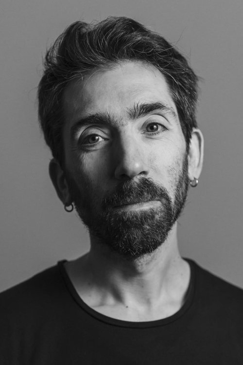

Uso il teatro come specchio. Per conoscerti, sceglierti.
Attraverso pratiche teatrali e l'esperienza nel corpo, lavoriamo insieme per prendere in mano la propria vita e affrontare le proprie sfide con presenza e consapevolezza.
Scopri i laboratori →
Foto di Elena Sartorari
Due percorsi
Per chi vuole conoscersi più a fondo
Laboratori aperti a chiunque voglia usare il teatro come strumento di indagine interiore. Non serve esperienza — serve voglia di andare a fondo.
Vedi i laboratori →
Per aziende e gruppi organizzati
Laboratori su relazioni, comunicazione e presenza per team di lavoro. Il teatro come spazio concreto dove le persone si incontrano davvero.
Scopri i progetti →
Prossimi laboratori
Aperto al pubblico
RE-FRAME
Presenza, leadership e comunicazione: percorso blended.
Settembre · Verona + Online
Percorso continuativo
Pratiche teatrali
Lunedì sera, da gennaio a maggio.
Prossima edizione: gen 2027
"Il corpo sa già la strada. A volte basta dargli il permesso di percorrerla."
Paolo Frigo
Laboratori aperti al pubblico
Esperienze teatrali per conoscerti più a fondo.
Non serve esperienza teatrale. Serve voglia di osservarsi, di mettersi in gioco, di andare a fondo.
Percorso blended · Online + in presenza a Verona
RE-FRAME
Settembre 2026 · Verona · da 250 €
Un percorso esperienziale di 10 ore tra corpo, teatro e coordinamento online per sviluppare presenza, leadership e comunicazione. Due laboratori in presenza, tre incontri online e un aperitivo di networking incluso.
Scopri e iscriviti →
← Laboratori
RE-FRAME
Ripartire con la giusta motivazione: Presenza, Leadership e Comunicazione
Un percorso esperienziale integrato di 10 ore tra corpo, teatro e coordinamento online per sviluppare le soft skill fondamentali nei team e nelle figure di responsabilità.
📍 Verona + 🌐 Online👥 Max 8 Partecipanti🍷 Aperitivo di Networking Incluso
Riserva il tuo posto (Early Bird entro il 05/08)
Il momento giusto
Perché questo percorso adesso?
In estate tutti riposano, ed è sicuramente un momento in cui siamo più rilassati. Ma è proprio un'ottima occasione per acquisire nuove competenze, fare nuove pratiche e stringere nuove relazioni. Ti dà la possibilità di stare un passo avanti e di arrivare a settembre con una grande carica: pronti a crescere, a migliorare, a cambiare.
Il metodo
Perché proprio il teatro per le soft skill?
Esistono molti percorsi validi, spesso proposti in azienda: la mindfulness, il coaching, le esperienze di team building. Il teatro è uno strumento eccezionale perché lavora contemporaneamente su più livelli:
🧘
Sta nel corpo: Spinge a radicarsi dentro di sé e a sviluppare consapevolezza di chi siamo.
🧠
Unisce mente ed emozioni: Mette in connessione la sfera emotiva con quella razionale e trasforma semplici "nozioni" teoriche in vera esperienza vissuta, portando luce sui talenti e sulle qualità inespresse.
⚡
Mantiene attivi: Gioco, improvvisazione, momenti di restituzione e creazione mantengono la mente sempre pronta, flessibile e reattiva.
👥
Costruisce squadra: Fa lavorare in gruppo sulle dinamiche reali e sul gioco di squadra.
Il formato
Il format integrato "blended"
Perché alternare momenti dal vivo e incontri online?
🌐
Rompere il ghiaccio prima d'aula: L'incontro online del 2 settembre serve a conoscersi e creare il gruppo prima del lavoro fisico, arrivando al primo laboratorio con il ghiaccio già rotto.
🌐
Rielaborare a mente fredda: Nella mia esperienza teatrale ho visto quanto possa smuovere una "semplice" pratica di teatro. La serata online intermedia (9 settembre) nasce dalla necessità di rielaborare a mente fredda ciò che è emerso nel primo laboratorio.
🍷
Aperitivo di Networking: Bello il lavoro con il corpo, e aver condiviso insieme dei bei momenti. Ancora meglio poter staccare la spina per un aperitivo dopo il primo laboratorio, dove rilassarsi e conoscere meglio le persone.
Programma
Programma dei laboratori in presenza (Verona)
🎭 LAB 1 · Sabato 5 Settembre · 15:00–18:30
Presenza e Leadership
Lavorare sul corpo per sviluppare solidità interiore, centratura e capacità di guida.
Centratura e presenza nello spazio
Consapevolezza del corpo come strumento comunicativo
Dinamiche di relazione: Io e l'Altro
Equilibrio tra condurre e affidarsi
🎭 LAB 2 · Sabato 19 Settembre · 15:00–18:30
Comunicazione e Conflitti
Usare le tecniche teatrali per gestire la complessità delle relazioni professionali.
Stare nel gruppo con complicità e ascolto
Creare connessione autentica con l'interlocutore
Riconoscere la malcomprensione
Comunicare in modo assertivo durante il conflitto
Calendario
Calendario completo
🌐Mercoledì 2 Settembre · 18:30–19:30 (Online)Kick-off & Rompighiaccio
🎭Sabato 5 Settembre · 15:00–18:30 (Verona)LAB 1: Presenza e Leadership
🍷Sabato 5 Settembre · 18:30–20:00 (Verona)Aperitivo di Networking
🌐Mercoledì 9 Settembre · 18:30–19:30 (Online)Rielaborazione & Integrazione
🎭Sabato 19 Settembre · 15:00–18:30 (Verona)LAB 2: Comunicazione e Conflitti
🌐Mercoledì 23 Settembre · 18:30–19:30 (Online)Restituzione Finale & Piano d'Azione
Chi guida il percorso

Paolo Frigo
Fondatore di Follùcida · Facilitatore, Formatore e Regista Teatrale
Lavoro con il teatro sociale, il corpo e la facilitazione di gruppo per trasformare le dinamiche relazionali ed emotive in strumenti di crescita personale e professionale. Nel corso degli anni ho sviluppato percorsi per aziende, enti e comunità con l'obiettivo di tradurre la pratica teatrale in competenze concrete per il lavoro di tutti i giorni: presenza, ascolto profondo, gestione del conflitto e leadership consapevole.
Iscrizione
💰 Tariffe di partecipazione
Operazione esente IVA — Regime Forfettario
⚡ Early Bird (entro il 5 Agosto)
valido fino al 5 agosto
270 €
👥 Sconto Team (da 2 iscrizioni della stessa azienda)
per partecipante
250 €
🏷️ Quota Standard (dal 6 Agosto)320 €
← Laboratori
Percorso continuativo · 17 incontri
Pratiche teatrali di lavoro su di sé.
Un percorso lungo per chi vuole usare il teatro come strumento di conoscenza e trasformazione personale. Lunedì sera, da gennaio a maggio.
Informazioni →
Il percorso
"Partendo dal corpo si possono esplorare posture e abitudini, situazioni che fanno emergere difficoltà, meccanicità e talenti."
Nello spazio protetto del gruppo, esploreremo attraverso il teatro i temi fondanti del lavoro su di sé: la meccanicità e la presenza, la frammentazione dell'io, le maschere, la legge dello specchio. Ognuno lavorerà su di sé partendo dai propri meccanismi.
Informazioni pratiche
Quando
Lunedì, 20:15 — 22:30
Dove
Centro Culturale Thirtha, Pescantina
Durata
17 incontri · gen — mag
Costo
300 € (inclusa tessera)
Prossima edizione: gennaio 2027.
Scrivimi per essere tra i primi a ricevere informazioni.
pao.frigo@gmail.com
Per aziende e gruppi organizzati
Il teatro come spazio in cui le persone si incontrano davvero.
Porto laboratori teatrali a team aziendali, cooperative, associazioni e gruppi di lavoro. Non esercizi teorici — esperienze concrete in cui le persone si incontrano con il corpo e con la presenza.
Non sono laboratori di team building. Pongono una base solida di apertura, fiducia e collaborazione autentica tra le persone.
Perché il teatro
"La voce, lo sguardo, il respiro, il movimento: tutto parla prima ancora che apriamo la bocca."
Il teatro è uno strumento antico e potente per lavorare sulle relazioni umane. Nei laboratori che conduco, il corpo viene prima delle parole. Questo permette di accedere a dinamiche autentiche — quelle che nelle riunioni restano non dette.
Ogni laboratorio è adattabile nelle tempistiche secondo le esigenze della tua organizzazione. Non è richiesta alcuna esperienza teatrale.
Conduce Paolo Frigo — laureato in Scienze e Tecniche delle Arti e dello Spettacolo, specializzato in Teatro Sociale e nelle tecniche di Teatro dell'Oppresso.
I laboratori
Relazioni · Legami · Ascolto
La Stessa Strada
Costruire relazioni nei gruppi di lavoro
Uno spazio per incontrarsi davvero. Il teatro per andare oltre la superficie e scoprire, in chi ci sta di fronte, la stessa umanità.
Scopri il laboratorio →
Conflitto · Dialogo · Trasformazione
Dall'Altra Parte
Il conflitto nei gruppi di lavoro
Quando il dialogo manca, le tensioni si accumulano in silenzio. Questo laboratorio trasforma il conflitto in potenziale creativo.
Scopri il laboratorio →
Presenza · Comunicazione · Leadership
Stare
Presenza, comunicazione e leadership personale
Comunicare bene non è una questione di tecnica. È una questione di presenza. Queste non sono qualità innate — si allenano.
Scopri il laboratorio →
Come funziona
01
Mi contatti
Raccontami il tuo gruppo e le esigenze. Definiremo insieme il laboratorio più adatto.
02
Progettiamo
Ogni proposta è adattabile nelle tempistiche. Concordiamo data, spazio e logistica.
03
Facciamo
4 ore di lavoro vivo, con il corpo e con la presenza. Materiali a carico del formatore.
Portiamo questo lavoro nel tuo gruppo.
Scrivimi per parlare del tuo contesto e trovare il laboratorio più adatto.
Contattami →
← Per le aziende
Laboratorio teatrale per aziende e gruppi di lavoro
La Stessa Strada
Laboratorio teatrale per costruire relazioni nei gruppi di lavoro.
Per team aziendali, gruppi di lavoro, staff di organizzazioni e cooperative. Non è richiesta nessuna esperienza teatrale.
Richiedi informazioni →
Il problema che affronta
"Nei gruppi di lavoro le persone hanno poche occasioni per relazionarsi davvero."
Spesso mancano sia gli strumenti per comunicare i propri bisogni in modo efficace, sia i momenti concreti per incontrarsi al di là delle dinamiche operative quotidiane. Il risultato è che diventa più difficile risolvere velocemente le problematiche di tutti i giorni.
L'approccio
"Uso il teatro come strumento per costruire e migliorare interazioni e relazioni nel gruppo di lavoro."
Creo l'occasione in cui le persone possano esprimersi ed incontrarsi. Accompagno ogni persona a entrare in contatto con se stessa, predisponendola così al contatto con il gruppo: ci si muove, si gioca insieme, si riscopre una dimensione ludica spontanea e leggera, e da lì si arriva a osservarsi e ascoltarsi sinceramente.
Le dinamiche del gruppo diventano il punto di partenza per un processo trasformativo, in cui ogni persona trova la propria strada nel proprio momento.
Cosa succede durante il laboratorio
01
Movimento e gioco
Si parte dal corpo, dal movimento e da una dimensione ludica leggera e spontanea.
02
Contatto
Gradualmente si entra in contatto con gli altri — anche fisicamente — con i propri tempi.
03
Ascolto e condivisione
Si arriva a momenti di ascolto profondo e condivisione collettiva autentica.
Cosa portano a casa i partecipanti
Relazione autentica
Una maggiore capacità di entrare in relazione con i colleghi in modo autentico, oltre i ruoli e le formalità quotidiane.
Fiducia e collaborazione
Una base solida di apertura, fiducia e collaborazione, costruita attraverso una vera esperienza di team building.
Strumenti concreti
La capacità di comunicare i propri bisogni in modo efficace e di incontrare davvero chi lavora accanto a te.
Informazioni pratiche
PartecipantiMinimo 6, massimo 12.
AbbigliamentoComodo, a strati, colori scuri e neutri. Si lavora senza scarpe, con calzettoni antiscivolo.
MaterialiA carico del formatore.
Durata e costiConcordati secondo le necessità della tua organizzazione.
Spazio
Sala chiusa e privata di dimensione adatta al numero dei partecipanti, climatizzata e confortevole, con pavimento caldo se possibile. Può essere fornita dall'azienda o concordata separatamente.
Conduzione
Paolo Frigo
Follùcida Teatro
Laureato in Scienze e Tecniche delle Arti e dello Spettacolo, si è specializzato in Teatro Sociale e dinamiche di gruppo. Si occupa di formazione relazionale per team e organizzazioni.
Focus del lavoro
Relazioni nei gruppi di lavoro
Gestione del conflitto
Comunicazione autentica
Capacità di mettersi nei panni dell'altro
Portiamo questo lavoro nel tuo gruppo.
Durata e costi vengono concordati secondo le esigenze della tua organizzazione. Scrivimi per parlare del tuo contesto.
← Per le aziende
Laboratorio teatrale per aziende e gruppi di lavoro
Dall'Altra Parte
Laboratorio teatrale sul conflitto nei gruppi di lavoro
Nei gruppi di lavoro capita che le relazioni si inceppino, che la comunicazione si faccia difficile, che qualcosa resti non detto. Nel conflitto risiede un potenziale creativo. Questo laboratorio lo trasforma.
Per team aziendali, gruppi di lavoro, staff di organizzazioni e cooperative. Non è richiesta nessuna esperienza teatrale.
Richiedi informazioni →
Il problema che affronta
"Quando il dialogo manca, l'energia del gruppo si disperde e le tensioni si accumulano in silenzio."
Nei gruppi di lavoro capita che le relazioni si inceppino, che la comunicazione si faccia difficile, che qualcosa resti non detto — magari pensando che nel "quieto vivere" tutto vada bene. Quando il dialogo manca, le tensioni si accumulano in silenzio, creando così le premesse per il conflitto.
L'approccio
"Nel conflitto risiede un potenziale creativo. Questa energia, invece di diventare distruttiva, può trasformarsi in qualcosa di nuovo."
Questo laboratorio lavora sul dialogo e sulla capacità di considerare lo sguardo dell'altro, prima che le tensioni esplodano. Attraverso il corpo, dinamiche di gruppo ed improvvisazioni, i partecipanti imparano a riconoscere i segnali del conflitto, a nominare i propri bisogni e a vedere la situazione anche da altri punti di vista.
Il teatro, con le sue tecniche e pratiche, ci aiuta ad esplicitare quello che resta non detto.
Cosa succede durante il laboratorio
01
Corpo e gioco
Si parte dal corpo e dal gioco per creare un clima disteso e collaborativo.
02
Teatro Immagine
Sculture corporee e oggetti animati (Teatro dell'Oppresso) per dare forma a idee ed emozioni.
03
CNV
La Comunicazione Non Violenta: uno strumento pratico per portare in luce il conflitto senza alimentarlo, da usare subito.
04
Cerchio
Si chiude con un cerchio di dialogo e condivisione collettiva.
Cosa portano a casa i partecipanti
Riconoscere i segnaliUna maggiore capacità di riconoscere i segnali del conflitto, prima che esploda.
Strumento concretoLa CNV per esprimere i propri bisogni in modo chiaro e non aggressivo — applicabile da subito nel lavoro quotidiano.
Cambio di prospettivaIl conflitto non come problema da evitare, ma come segnale che qualcosa vuole cambiare.
Informazioni pratiche
PartecipantiMinimo 6, massimo 12.
AbbigliamentoComodo, a strati, colori scuri e neutri. Si lavora senza scarpe, con calzettoni antiscivolo.
MaterialiA carico del formatore.
Durata e costiConcordati secondo le necessità della tua organizzazione.
Spazio
Sala chiusa e privata di dimensione adatta al numero dei partecipanti, climatizzata e confortevole, con pavimento caldo se possibile. Può essere fornita dall'azienda o concordata separatamente.
Conduzione
Paolo Frigo
Follùcida Teatro
Laureato in Scienze e Tecniche delle Arti e dello Spettacolo, si è specializzato in Teatro Sociale e dinamiche di gruppo. Si occupa di formazione relazionale per team e organizzazioni.
Focus del lavoro
Relazioni nei gruppi di lavoro
Gestione del conflitto
Comunicazione autentica
Capacità di mettersi nei panni dell'altro
Trasformiamo le tensioni in risorsa.
Durata e costi vengono concordati secondo le esigenze della tua organizzazione. Scrivimi per parlare del tuo contesto.
← Per le aziende
Laboratorio teatrale per aziende · Presenza, comunicazione, leadership
Stare
Laboratorio teatrale su presenza, comunicazione e leadership personale.
Per team aziendali, manager, responsabili di gruppo, chiunque voglia lavorare sulla propria presenza e sul proprio modo di comunicare. Non è richiesta nessuna esperienza teatrale.
Richiedi informazioni →
Il problema che affronta
Non saper comunicare bene ha un costo concreto: ritardi, perdite di tempo, errori, stress che si accumula.
Spesso la causa non è solo la mancanza di tecnica, ma di presenza e focalizzazione. Questo laboratorio lavora prima di tutto sulla presenza e sul riscoprire il miglior modo per comunicare efficacemente: confronti più diretti, decisioni più rapide, capacità di dare e chiedere feedback.
L'approccio
"Uso il teatro come palestra interiore."
Lavorando sul corpo si impara a stare dentro se stessi, a riconoscere i propri bisogni, prima di reagire d'istinto. Chi è centrato comunica con più chiarezza e più consapevolezza perché non parla mosso dall'ansia o per difesa.
Da questa base nascono confronti più calmi e diretti, e una maggiore capacità di affrontare i problemi.
Cosa succede durante il laboratorio
Individuale
Si entra in contatto con sé stessi. Cosa significa per me presenza, comunicazione, leadership?
In coppia
Il lavoro si estende all'altro, con esercizi di ascolto e presenza condivisa.
Gruppo
Il corpo e le parole diventano materiale vivo da portare nella scena collettiva.
Brainstorming
Il tema diventa riflessione condivisa: idee, domande, scoperte personali.
Condivisione
Si chiude insieme, fissando quello che il corpo ha già capito.
Cosa portano a casa i partecipanti
01
Consapevolezza
Una maggiore consapevolezza del proprio modo di stare, di muoversi, di comunicare.
02
Presenza
La capacità di essere presenti, centrati, focalizzati — anche sotto pressione.
03
Leadership
Uno sguardo chiaro sul personale significato di leadership, al di là dei ruoli e delle gerarchie.
Informazioni pratiche
PartecipantiMinimo 6, massimo 12.
AbbigliamentoComodo, a strati, colori scuri e neutri. Si lavora senza scarpe, con calzettoni antiscivolo.
MaterialiA carico del formatore.
Durata e costiConcordati secondo le necessità della tua organizzazione.
Spazio
Sala chiusa e privata di dimensione adatta al numero dei partecipanti, climatizzata e confortevole, con pavimento caldo se possibile. Può essere fornita dall'azienda o concordata separatamente.
Conduzione
Paolo Frigo
Follùcida Teatro
Laureato in Scienze e Tecniche delle Arti e dello Spettacolo, si è specializzato in Teatro Sociale e dinamiche di gruppo. Si occupa di formazione relazionale per team e organizzazioni.
Focus del lavoro
Relazioni nei gruppi di lavoro
Gestione del conflitto
Comunicazione autentica
Capacità di mettersi nei panni dell'altro
Portiamo la presenza nel tuo team.
Foto di Elena Sartorari
Chi sono
Paolo Frigo
Formatore teatrale & Regista
Laureato in Scienze e Tecniche delle Arti e dello Spettacolo, mi sono specializzato in Teatro Sociale, immergendomi nelle tecniche di Teatro dell'Oppresso.
Grande appassionato di musica e scrittura, ho militato in diversi progetti musicali e inciso un disco come cantautore. A novembre 2024 ho debuttato come regista con lo spettacolo "Insogna".
Nella mia professione di formatore, fondo la ricerca interiore dell'essere umano e il lavoro su di sé con il potere trasformativo del teatro.
Il mio approccio
"Fondo la ricerca interiore e il lavoro su di sé con il potere trasformativo del teatro."
Questo lavoro parte dalla mia formazione in teatro sociale e nel tempo ha inglobato il lavoro su di sé come individuo. Attraverso gli strumenti teatrali creo limiti e obiettivi concreti per osservarci, ascoltarci, mettere in discussione. Sciogliere e tornare a sé stessi.
Formazione e percorso
Formazione
Scienze e Tecniche delle Arti e dello Spettacolo
Specializzazione
Teatro Sociale & Teatro dell'Oppresso
Regia
"Insogna" — novembre 2024
[foto di laboratorio]
"Il gruppo ci sostiene e ci fa da specchio. Ci dà la possibilità di metterci nei panni degli altri."
Dal lavoro in laboratorio
Scrivimi
Parliamo del tuo progetto.
Che tu voglia partecipare a un laboratorio o portare un percorso nella tua organizzazione, scrivimi. Rispondo entro 48 ore.